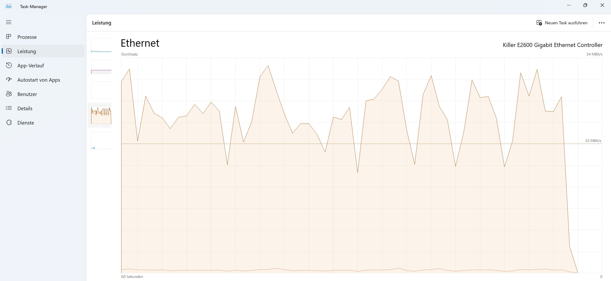

Immer wenn ich einen Download starte, der mehrere GB groß ist, geht er nach einigen Minuten auf 0 Bytes/s und bricht anschließend mit der Meldung "Netzwerkfehler" ab.
In Onlinespielen werde ich ebenfalls aus dem Spiel geschmissen. Ich weiß zwar, dass der Task-Manager kein extrem zuverlässiges Mittel ist, Fehler zu finden, jedoch habe ich trotzdem ein Bild von einem der Abbrüche hier: 
Wichtig zu sagen wäre noch, dass mein Laptop zwar mit einem LAN-Kabel zum Router verbunden ist, jedoch ich kein Kabelinternet ins Haus bekomme.
Muss ich vielleicht in den Einstellungen vom Router etwas ändern?
Freue mich über jede Hilfe.
Danke im Voraus!
Ich hatte das damals beim mf287plus aber lange her aber immer bei Download bzw ab 1.2gb war es aus bzw neu start selber der Router aber das ist war ein Problem von ZTE
Aber das haben sehr viele LTE 5g Router leider
Ein Xiaomi oder wnc oder zyxel Geräte hatten das noch nie eher nur ZTE , Huawei , tp Link
Eventuell mal mit anderen Router testen wenn möglich
P.s. askey hat das Problem auch nicht
Aber Fritzbox haben es auch manchmal
Ich habe die Xiami Internet Flex Box AX3000. Ist bei der das Problem auch bekannt? Manchmal lädt der Download bis fast 5GB und manchmal hört er schon nach 1GB auf.
Über die Einstellungen lässt sich das nicht ändern oder?
Eigentlich sollte es bei Xiaomi nicht der Fall sein zumindest meine Schwägerin hat unten in der Wohnung den AX3000 Xiaomi LTE Router und da ist eigentlich nix aber sie ladet auch nicht viel runter !
Ich hatte vorher den AX5400 ohne Probleme !
Aber meisten Probleme haben die ZTE und die Fritzboxen auch bei SA zum Beispiel
Hast du das neue Update schon drauf ? Mache mal ein Firmware Update
Welche Karte hast du Magenta?
Probiere zur Not Mal den anderen apn aus
Geben Sie bei APN business.gprsinternet ein.
Geben Sie bei Benutzername t-mobile ein.
Geben Sie bei Passwort tm ein.
Bearbeitet von Klaximaxi43Hat funktioniert! Danke dir!
Das ist gut 👍 sag bescheid ob es haltet teste mal 1-2 Tage aber bei Xiaomi wie gesagt sollte das nicht sein !
Xiaomi,wnc, askey , zyxel kann man immer kaufen bei alle anderen ist es ein Glücksspiel! Habe eigentlich alle durch aber Xiaomi und wnc Outdoor router sind echt stabil und keine Fehler Abbrüche eigentlich!
P.s. Stelle auch den Kanal fix ein
2.4ghz auf 1,6,11
5ghz auf 36-48
Diese sind die einzigen was sich nicht überlappen
Mfg
Bearbeitet von Klaximaxi43So nochmals viel getestet beste Ergebnis ist
2,4ghz mit Kanal 6 und 20mhz breite
5ghz mit Kanal 40 oder 44 mit 20 bzw 40mhz
Kommt das raus von meine 100/20
Man lernt nie aus
Wenn man auf Panama einstellt die Sprache sind noch mehr alle Wege offen auch über 144 Kanal etc
Mfg
{kind=link}
{kind=link}
{kind=link}